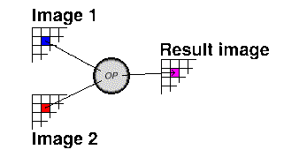

ImageOr is a binary operator. A binary operator is one which takes data from two images and generates a third image.
It does this by taking the value of the corresponding pixels in each of the two input images and combining the
values using some operator to generate the apropriate pixel in the third image. Both input images must have the same
dimensions.
ImageOr ORs the red values, green values and blue values for the two input images to generate a new image.
Mathematically it can be expressed as follows:
rr(i, j) = r1(i, j) OR r2(i, j)
gr(i, j) = g1(i, j) OR g2(i, j)
br(i, J) = b1(i, j) OR b2(i, j)
See also
ImageAdd,
ImageAnd,
ImageDiff,
ImageXor